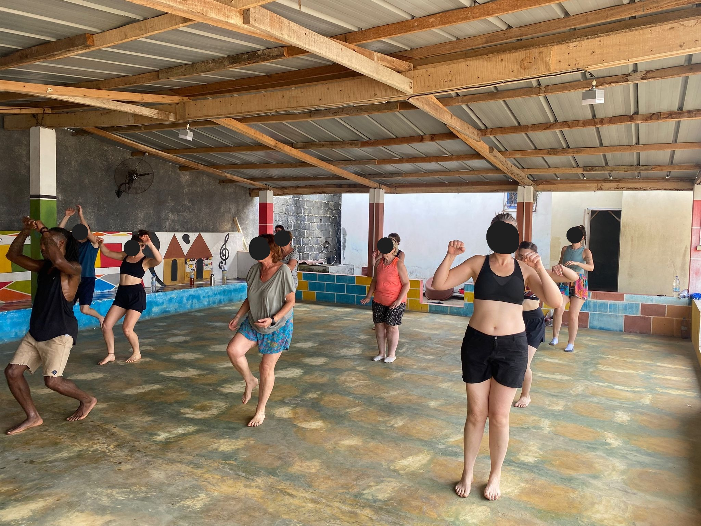
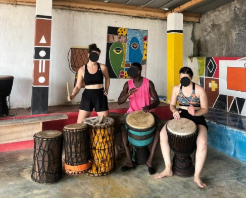
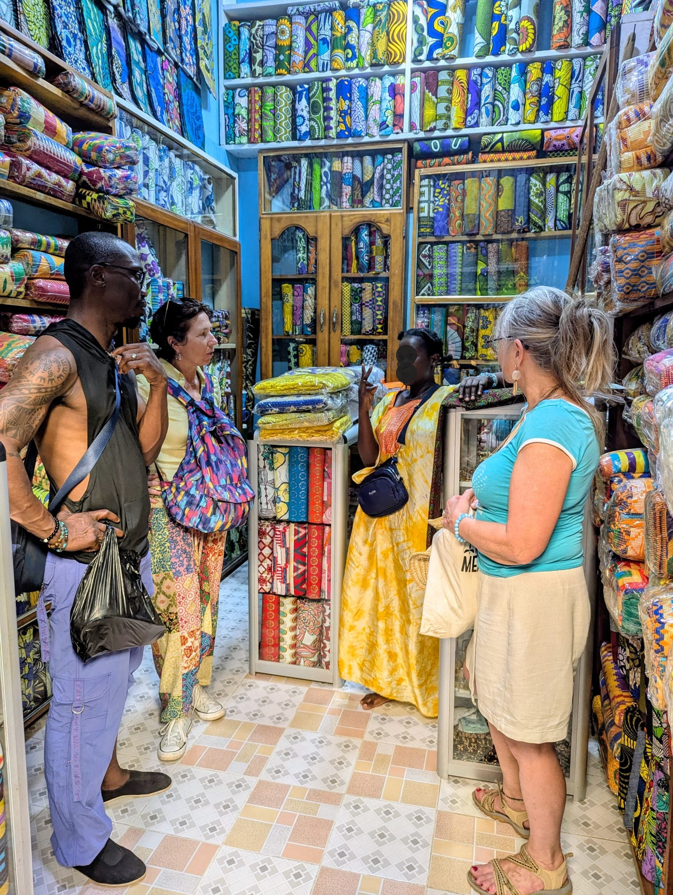
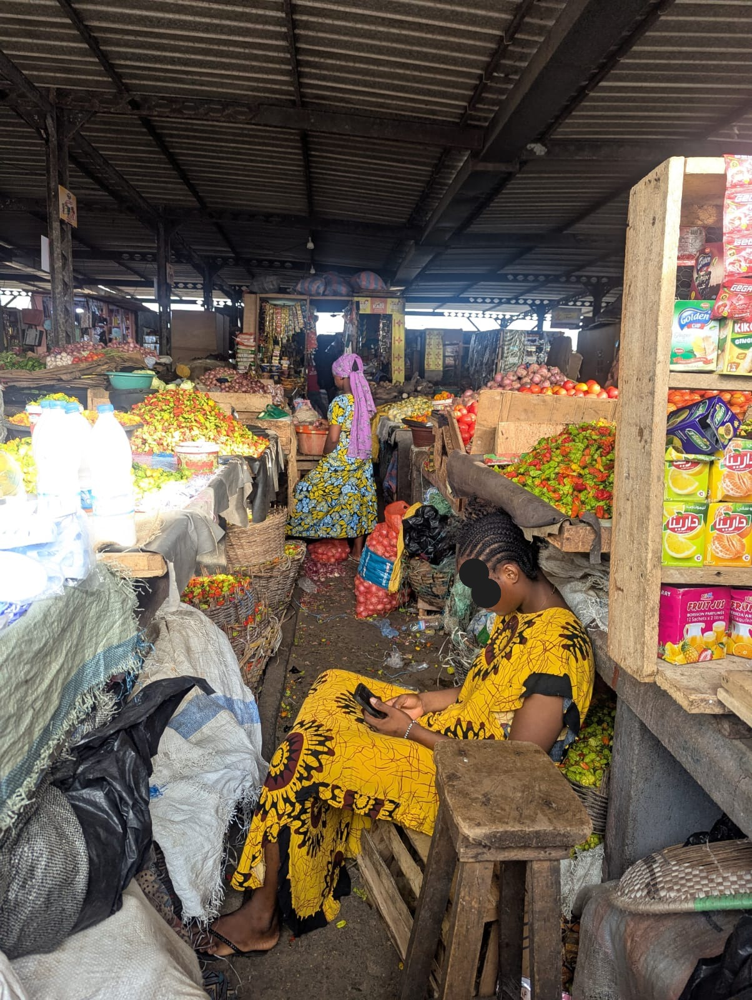

Carnet en images
Voyage-stage en Côte d’Ivoire — Février 2026
Stage de danse à Grand-Bassam avec Aminata Bamba et P’tit Moctar, musique, découvertes et séjour à Guéménédou pour rencontrer les villageois et remettre les dons apportés par l’association.






